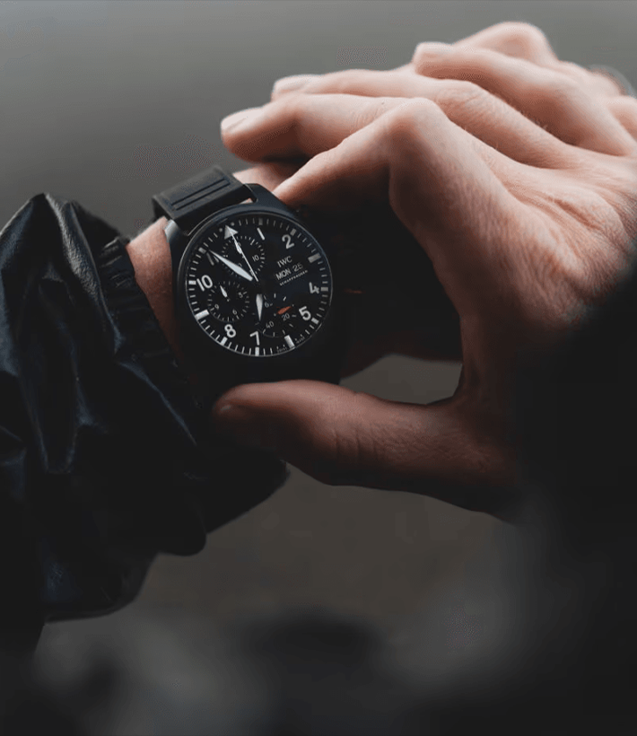
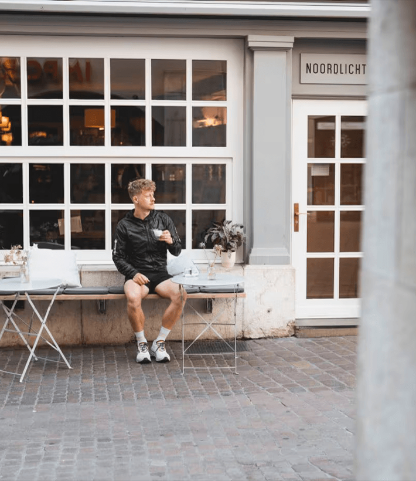

Join landscape photographer Joni Hedinger on his run through IWC’s hometown, SCHAFFHAUSEN.
-

-
READY, SET, GO!
6:55 a.m.
Starting at the Rhine Falls, I felt quite small as I took in the breathtaking view of Europe’s largest waterfall. The power of the cascading water set the tone for my run. On my wrist, I wore the IWC Pilot’s Watch Chronograph 41 TOP GUN (Ref. IW389401) with stop function. The first part of my route led me along the Rhine.
Shortly before reaching the old town of Schaffhausen, I passed the IWC headquarters. I couldn’t help but appreciate its architectural significance and the city’s watchmaking heritage. After a quick look at the beautiful building, which also houses the IWC Museum, I continued my run.
-

-
WELCOME PAUSE
7:35 a.m.
Taking a moment for a coffee break was a welcome pause during my run. I found a cozy café where I enjoyed an espresso which provided me with new energy.
The old town of Schaffhausen is clearly worth a visit. I passed many historic buildings. Of course, it also offers many different stores and restaurants which I did not have time to visit during my run.
After the break, I resumed the stop function on my Pilot’s Watch Chronograph 41 TOP GUN and continued on.
-
-
ENJOY THE VIEW!
8:07 a.m.
I made my way to the Munot, a historic fortress that offered panoramic views of the city. After running up the 200-meter long staircase and reaching the summit, I stepped inside the Munot and was immediately captivated by its historic charm. The fortress exuded a sense of timelessness, and I was transported back in time, imagining the stories and events that had taken place within its walls.
On the top of Munot, looking out over the city of Schaffhausen, I saw a patchwork of rooftops and the sparkling waters of the Rhine river. It was a sight that made every effort worthwhile. I took a moment to catch my breath and enjoy the view that stretched out before me. The Munot was a true highlight of the city run, offering not only physical exertion but also a glimpse into the historical heritage of Schaffhausen.
-
-
TIME TO SLOW DOWN AND BREATHE
9:00 a.m.
The final part of my run through Schaffhausen took me to the calm rural region surrounding the city. As I ventured away from the bustling streets and into the peaceful countryside, a whole new world unfolded before me. The countryside of Schaffhausen was a scenic escape from the urban environment.
One particular highlight was a poppy field. As I arrived at this serene location, I was struck by its charm. It was a reminder to slow down, to breathe, and to find joy in the simplicity of the natural world. That was the end of my run. I would say a perfect finish.
-
-
WINDING DOWN
In conclusion, my city run through Schaffhausen was a really great adventure, filled with breathtaking sights and memorable stops. From the power of the Rhine Falls to the historic Munot, and the beauty of the poppy field in the rural region, each location had its own charm. I hope my experiences inspired you to visit this beautiful town.
It offers a lot of possibilities that cater to all interests and preferences. Whether you’re an outdoor enthusiast or a history lover, Schaffhausen has something special to offer for everyone. Or maybe you can discover Schaffhausen with your running shoes, like I did. Have fun!
 BIG PILOT'S WATCH AMG G 63 18 ct Armor Gold® case, Automatic, 46.2 mm $ 8,500
BIG PILOT'S WATCH AMG G 63 18 ct Armor Gold® case, Automatic, 46.2 mm $ 8,500 PILOT'S WATCH MARK XX Stainless steel case, Automatic, 40.0 mm $ 6,150
PILOT'S WATCH MARK XX Stainless steel case, Automatic, 40.0 mm $ 6,150 PILOT'S WATCH CHRONOGRAPH 41 TOP GUN OCEANA Ceramic case, Automatic, 41.9 mm $ 11,700
PILOT'S WATCH CHRONOGRAPH 41 TOP GUN OCEANA Ceramic case, Automatic, 41.9 mm $ 11,700